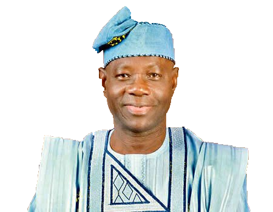

INTRODUCTION
On February 14th, 2058, Liz Badenoch of the One Nigeria Party initiated what came to be known as the Lagos Forum. Invited to the forum were several parties, united in their belief in a unified, transcendent Nigeria. The fallout of Khalil's resignation had split those who believed in the nation as he did, but with this forum, like-minded Nigerians came together once again and formed the National Democratic Front.
The National Democratic Front stands for a renewal of Khalil's ideals: a Nigeria united, claiming its rightful place on the world stage. The pillars of the NDF are Khalil's Three Principles, as well as Dr. Sun Yat-sen's Three Principles. Along these lines, the NDF advocates for a unitary Nigeria, ensuring that the country does not fall to regionalist divides. Additionally, in order to secure the nation against its regional enemies, the state must accelerate the modernization of its economy and military, lest it fall to the Sahel once more. Democracy is a core tenet of the party, and all attempts to thwart the right of any Nigerian, no matter their background, from participating in their government must be crushed judiciously.
Comprising the NDF are several different factions, most of which descend from the former parties that merged to form the NDF. Firstly, the Nationalist Faction, descending from the former Nigerian Nationalist Party, is led by the party Chairman Ayodele Balogun, and emphasizes Dr. Sun Yat-sen's Three Principles within the broader NDF agenda. The EAS (Equator Nigeria Society) Faction comes from a party that shares its name and lobbies for the invasion of Cameroon. Representing the part of the party that is more lenient on non-Pada or Yoruba southerners and other southern Regionalists, the DPU (Desired People's Union) is led by the Hindu K.A. Ibezim. Lastly, the Developmentalist Faction was born of Nigerians hellbent on eliminating all obstacles to progress.
Divided, these parties still stood together in spirit despite their separation, but together they now rise above all the rest, seeking and promising a brighter future for all Nigerians, and the ascendance of the nation to the next century and beyond.
FOREWORD BY CHAIRMAN

For nearly three decades, Nigeria has experienced consistent growth like never before. Through every political challenge, foreign obstacle, and social question, Nigeria has prospered. This success can be attributed to one man: President Michael Khalil, and his three pillars. Unity, for the preservation of the Nigerian nation, a nation for every single Nigerian; Liberty, for the rights that each Nigerian had fought for and won with blood and iron during the ASS invasion, and that now constitute their rights under the Republic of Nigeria; and Secularism, for the Nigeria that strives to create an environment where Nigerians of all walks of life, and all religions can thrive without prioritizing one or the other.
These pillars have brought us to this point, and it is the belief of the NDF that only under these pillars can we continue to thrive as the nation has before. With President Khalil stepping down, his legacy is left to those in favor of a brighter day for Nigeria. That brighter day is coming, for the NDF carries Khalil's legacy, and with it the promise of Nigeria's future glory.